More locally stable models on examples pulled from the dysts database of chaotic systems + bonus: best reduced-order models to-date for the lid-cavity flow
Here we test the locally stable trapping theorem on additional systems from the dysts database, https://github.com/williamgilpin/dysts, that (in principle) satisfy the totally-symmetric quadratic coefficient constraint. The locally stable trapping method allows the quadratic models to deviate from being totally symmetric by a small amount. These deviations are caused by finite data, noise, or imperfect optimization.
[1]:
import numpy as np
from matplotlib import pyplot as plt
import pysindy as ps
from scipy.integrate import solve_ivp
from trapping_utils import *
# ignore warnings
import warnings
warnings.filterwarnings("ignore")
The local stability version of Trapping SINDy reduces to the following unconstrained optimization problem:
We now solve this problem for \(\beta \ll \alpha\).
A conservative estimate of the local stability is:
And the radius of the trapping region is given by:
Dysts database contains a number of quadratically nonlinear chaotic systems with the special energy-preserving nonlinear symmetry.
You will need to install the dysts database with ‘pip install dysts’ or similar command (see https://github.com/williamgilpin/dysts) in order to load in the data.
[2]:
import dysts.flows as flows
# List below picks out the polynomially nonlinear systems that are quadratic and
# exhibit the special structure in the quadratic coefficients.
trapping_system_list = np.array([2, 3, 7, 10, 18, 24, 27, 29, 30, 34, 40, 46, 47, 66, 67])
systems_list = [
"Aizawa", "Bouali2",
"GenesioTesi", "HyperBao", "HyperCai", "HyperJha",
"HyperLorenz", "HyperLu", "HyperPang", "Laser",
"Lorenz", "LorenzBounded", "MooreSpiegel", "Rossler", "ShimizuMorioka",
"HenonHeiles", "GuckenheimerHolmes", "Halvorsen", "KawczynskiStrizhak",
"VallisElNino", "RabinovichFabrikant", "NoseHoover", "Dadras", "RikitakeDynamo",
"NuclearQuadrupole", "PehlivanWei", "SprottTorus", "SprottJerk", "SprottA", "SprottB",
"SprottC", "SprottD", "SprottE", "SprottF", "SprottG", "SprottH", "SprottI", "SprottJ",
"SprottK", "SprottL", "SprottM", "SprottN", "SprottO", "SprottP", "SprottQ", "SprottR",
"SprottS", "Rucklidge", "Sakarya", "RayleighBenard", "Finance", "LuChenCheng",
"LuChen", "QiChen", "ZhouChen", "BurkeShaw", "Chen", "ChenLee", "WangSun", "DequanLi",
"NewtonLiepnik", "HyperRossler", "HyperQi", "Qi", "LorenzStenflo", "HyperYangChen",
"HyperYan", "HyperXu", "HyperWang", "Hadley",
]
alphabetical_sort = np.argsort(systems_list)
systems_list = (np.array(systems_list)[alphabetical_sort])[trapping_system_list]
# attributes list
attributes = [
"maximum_lyapunov_estimated",
"lyapunov_spectrum_estimated",
"embedding_dimension",
"parameters",
"dt",
"hamiltonian",
"period",
"unbounded_indices"
]
# Get attributes
all_properties = dict()
for i, equation_name in enumerate(systems_list):
eq = getattr(flows, equation_name)()
attr_vals = [getattr(eq, item, None) for item in attributes]
all_properties[equation_name] = dict(zip(attributes, attr_vals))
# Get training and testing trajectories for all the experimental systems
n = 1000 # Trajectories with 1000 points
pts_per_period = 100 # sampling with 100 points per period
n_trajectories = 1 # generate n_trajectories starting from different initial conditions on the attractor
all_sols_train, all_t_train, all_sols_test, all_t_test = load_data(
systems_list, all_properties,
n=n, pts_per_period=pts_per_period,
random_bump=False, # optionally start with initial conditions pushed slightly off the attractor
include_transients=False, # optionally do high-resolution sampling at rate proportional to the dt parameter
n_trajectories=n_trajectories
)
0 BurkeShaw(name='BurkeShaw', params={'e': 13, 'n': 10}, random_state=None)
1 Chen(name='Chen', params={'a': 35, 'b': 3, 'c': 28}, random_state=None)
2 Finance(name='Finance', params={'a': 0.001, 'b': 0.2, 'c': 1.1}, random_state=None)
3 Hadley(name='Hadley', params={'a': 0.2, 'b': 4, 'f': 9, 'g': 1}, random_state=None)
4 HyperPang(name='HyperPang', params={'a': 36, 'b': 3, 'c': 20, 'd': 2}, random_state=None)
5 HyperYangChen(name='HyperYangChen', params={'a': 30, 'b': 3, 'c': 35, 'd': 8}, random_state=None)
6 Lorenz(name='Lorenz', params={'beta': 2.667, 'rho': 28, 'sigma': 10}, random_state=None)
7 LorenzStenflo(name='LorenzStenflo', params={'a': 2, 'b': 0.7, 'c': 26, 'd': 1.5}, random_state=None)
8 LuChen(name='LuChen', params={'a': 36, 'b': 3, 'c': 18}, random_state=None)
9 NoseHoover(name='NoseHoover', params={'a': 1.5}, random_state=None)
10 RayleighBenard(name='RayleighBenard', params={'a': 30, 'b': 5, 'r': 18}, random_state=None)
11 SprottA(name='SprottA', params={}, random_state=None)
12 SprottB(name='SprottB', params={}, random_state=None)
13 SprottTorus(name='SprottTorus', params={}, random_state=None)
14 VallisElNino(name='VallisElNino', params={'b': 102, 'c': 3, 'p': 0}, random_state=None)
Get some more information about the dynamical systems and their true equation coefficients
[3]:
from dysts.equation_utils import make_dysts_true_coefficients
num_attractors = len(systems_list)
# Calculate some dynamical properties
lyap_list = []
dimension_list = []
param_list = []
# Calculate various definitions of scale separation
scale_list_avg = []
scale_list = []
linear_scale_list = []
for system in systems_list:
lyap_list.append(all_properties[system]['maximum_lyapunov_estimated'])
dimension_list.append(all_properties[system]['embedding_dimension'])
param_list.append(all_properties[system]['parameters'])
# Ratio of dominant (average) to smallest timescales
scale_list_avg.append(all_properties[system]['period'] / all_properties[system]['dt'])
# Get the true coefficients for each system
true_coefficients = make_dysts_true_coefficients(systems_list,
all_sols_train,
dimension_list,
param_list)
# Need to reorder the calculated dysts equation coefficients to be
# consistent with the SINDy library used below
reorder1 = np.array(
[0,
1,
2,
3,
5, # x^2 -> xy
6, # xy -> xz
8, # xz -> yz
4, # y^2 -> x^2
7, # yz -> y^2
9, # z^2 -> z^2
])
reorder2 = np.array(
[0,
1,
2,
3,
4,
6, # x^2 -> xy
7, # xy -> xz
8, # xz -> xw
10, # xw -> yz
11, # y^2 -> yw
13, # yz -> zw
5, # yw -> x^2
9, # z^2 -> y^2
12, # zw -> z^2
14, # w^2 -> w^2
])
Issues with using the trapping theorem with some of the dysts systems
The trapping theorem and its variants require that systems are “effectively nonlinear”, meaning there are no invariant linear subspaces where the system trajectories can escape to infinity.
It turns out that Burke-Shaw, NoseHoover, SprottTorus, SprottA and SprottB are all not effectively nonlinear and exhibit subspaces where one of the coordinates can grow indefinitely! This is a good thing that the trapping theorem doesn’t work for them – these systems are not globally stable after all.
Actually, SprottTorus has no cubic terms in the energy at all (so the trapping theorem is thwarted), and is very challenging to evaluate the boundedness. However, numerical results seem to point to it being bounded for all practical purposes (https://sprott.physics.wisc.edu/pubs/paper423.pdf).
HyperPang, Chen, HyperYangChen, RayleighBernard, LuChen also not effectively nonlinear, but have stable linear (invariant) subspaces, usually (x=0, y=0, z, …). Extending the trapping theorem to address these cases of global stability is work in progress.
Finally, the systems that do work with the trapping theorem: Finance, Hadley, Lorenz, LorenzStenFlo, VallisElNino.
We will illustrate how each of these systems produces a negative definite \(\mathbf{A}^S\) matrix or “gets stuck” before this happens, which indicates a lack of effective nonlinearity and potential for unboundedness.
We use simulated annealing to show this with the analytic systems below, and we also fit Trapping SINDy models for each.
[4]:
from scipy.optimize import dual_annealing as anneal_algo
# define hyperparameters
reg_weight_lam = 0
max_iter = 5000
eta = 1.0e3
alpha_m = 4e-2 * eta # default is 1e-2 * eta so this speeds up the code here
# Bounds for simulated annealing
boundmax = 1000
boundmin = -1000
plt.figure(figsize=(20, 6))
for i in range(len(systems_list)):
print(i, systems_list[i])
r = dimension_list[i]
# make training and testing data
t = all_t_train[systems_list[i]][0]
x_train = all_sols_train[systems_list[i]][0]
x_test = all_sols_test[systems_list[i]][0]
# run trapping SINDy
sindy_opt = ps.TrappingSR3(
method="global",
_n_tgts=r,
_include_bias=True,
reg_weight_lam=reg_weight_lam,
eta=eta,
alpha_m=alpha_m,
max_iter=max_iter,
gamma=-0.1,
verbose=True,
)
model = ps.SINDy(
optimizer=sindy_opt,
feature_library=sindy_library,
)
model.fit(x_train, t=t)
# Check the model coefficients and integrate it
Xi = model.coefficients().T
xdot_test = model.differentiate(x_test, t=t)
xdot_test_pred = model.predict(x_test)
x_train_pred = model.simulate(x_train[0, :], t, integrator_kws=integrator_keywords)
x_test_pred = model.simulate(x_test[0, :], t, integrator_kws=integrator_keywords)
# Plot the integrated trajectories from the model
plt.subplot(3, 5, i + 1)
plt.plot(x_test[:, 0], x_test[:, 1])
plt.plot(x_test_pred[:, 0], x_test_pred[:, 1], label=systems_list[i])
plt.grid(True)
plt.legend()
check_local_stability(Xi, sindy_opt, 1.0)
Xi_true = (true_coefficients[i].T)[: Xi.shape[0], :]
# run simulated annealing on the true system to make sure the system is amenable to trapping theorem
boundvals = np.zeros((r, 2))
boundvals[:, 0] = boundmin
boundvals[:, 1] = boundmax
PL_tensor = sindy_opt.PL_
PM_tensor = sindy_opt.PM_
L = np.tensordot(PL_tensor, Xi_true, axes=([3, 2], [0, 1]))
Q = np.tensordot(PM_tensor, Xi_true, axes=([4, 3], [0, 1]))
algo_sol = anneal_algo(
obj_function, bounds=boundvals, args=(L, Q, np.eye(r)), maxiter=500
)
opt_m = algo_sol.x
opt_energy = algo_sol.fun
print(
"Simulated annealing managed to reduce the largest eigenvalue of A^S to eig1 = ",
opt_energy,
)
0 BurkeShaw
Iter ... |y-Xw|^2 ... |Pw-A|^2/eta ... |w|_1 ... |Qijk|/a ... |Qijk+...|/b ... Total:
0 ... 4.452e+01 ... 5.896e-03 ... 0.00e+00 ... 4.88e-19 ... 1.99e-48 ... 4.45e+01
500 ... 4.452e+01 ... 6.789e-04 ... 0.00e+00 ... 4.88e-19 ... 1.58e-48 ... 4.45e+01
1000 ... 4.452e+01 ... 6.788e-04 ... 0.00e+00 ... 4.88e-19 ... 1.25e-48 ... 4.45e+01
1500 ... 4.452e+01 ... 6.788e-04 ... 0.00e+00 ... 4.88e-19 ... 9.20e-48 ... 4.45e+01
2000 ... 4.452e+01 ... 6.788e-04 ... 0.00e+00 ... 4.88e-19 ... 2.34e-48 ... 4.45e+01
2500 ... 4.452e+01 ... 6.788e-04 ... 0.00e+00 ... 4.88e-19 ... 7.96e-49 ... 4.45e+01
3000 ... 4.452e+01 ... 6.788e-04 ... 0.00e+00 ... 4.88e-19 ... 2.00e-48 ... 4.45e+01
3500 ... 4.452e+01 ... 6.788e-04 ... 0.00e+00 ... 4.88e-19 ... 2.11e-48 ... 4.45e+01
4000 ... 4.452e+01 ... 6.788e-04 ... 0.00e+00 ... 4.88e-19 ... 1.52e-48 ... 4.45e+01
4500 ... 4.452e+01 ... 6.788e-04 ... 0.00e+00 ... 4.88e-19 ... 5.37e-48 ... 4.45e+01
optimal m: [-1.26088372 -0.0041027 -0.98796376]
As eigvals: [-9.90126722 -0.01865824 1.06227222]
0.5 * |tilde{H}_0|_F = 9.903245912177569e-15
0.5 * |tilde{H}_0|_F^2 / beta = 1.9614855919412343e-48
Estimate of trapping region size, Rm = 0
Local stability size, R_ls= 0
Simulated annealing managed to reduce the largest eigenvalue of A^S to eig1 = 1.0000000000000002
1 Chen
Iter ... |y-Xw|^2 ... |Pw-A|^2/eta ... |w|_1 ... |Qijk|/a ... |Qijk+...|/b ... Total:
0 ... 3.309e+02 ... 4.954e-01 ... 0.00e+00 ... 4.87e-21 ... 2.99e-48 ... 3.31e+02
500 ... 3.309e+02 ... 3.951e-01 ... 0.00e+00 ... 4.87e-21 ... 5.16e-48 ... 3.31e+02
1000 ... 3.309e+02 ... 3.938e-01 ... 0.00e+00 ... 4.87e-21 ... 3.67e-48 ... 3.31e+02
1500 ... 3.309e+02 ... 3.938e-01 ... 0.00e+00 ... 4.87e-21 ... 2.44e-47 ... 3.31e+02
2000 ... 3.309e+02 ... 3.938e-01 ... 0.00e+00 ... 4.87e-21 ... 2.34e-47 ... 3.31e+02
2500 ... 3.309e+02 ... 3.937e-01 ... 0.00e+00 ... 4.87e-21 ... 1.70e-47 ... 3.31e+02
3000 ... 3.309e+02 ... 3.937e-01 ... 0.00e+00 ... 4.87e-21 ... 1.16e-47 ... 3.31e+02
3500 ... 3.309e+02 ... 3.937e-01 ... 0.00e+00 ... 4.87e-21 ... 1.57e-47 ... 3.31e+02
4000 ... 3.309e+02 ... 3.937e-01 ... 0.00e+00 ... 4.87e-21 ... 1.83e-47 ... 3.31e+02
4500 ... 3.309e+02 ... 3.937e-01 ... 0.00e+00 ... 4.87e-21 ... 1.34e-47 ... 3.31e+02
optimal m: [-3.48723054 -0.5241763 28.46158507]
As eigvals: [-34.86296293 -2.98802856 27.96138237]
0.5 * |tilde{H}_0|_F = 1.3690760117257443e-14
0.5 * |tilde{H}_0|_F^2 / beta = 3.748738251765741e-48
Estimate of trapping region size, Rm = 0
Local stability size, R_ls= 0
Simulated annealing managed to reduce the largest eigenvalue of A^S to eig1 = 28.000000001008157
2 Finance
Iter ... |y-Xw|^2 ... |Pw-A|^2/eta ... |w|_1 ... |Qijk|/a ... |Qijk+...|/b ... Total:
0 ... 8.341e-02 ... 1.037e-02 ... 0.00e+00 ... 7.28e-21 ... 1.66e-47 ... 9.38e-02
500 ... 8.341e-02 ... 4.508e-09 ... 0.00e+00 ... 7.28e-21 ... 2.71e-48 ... 8.34e-02
optimal m: [-0.17950208 -5.18211815 -2.00065016]
As eigvals: [-1.09369068 -0.26944528 -0.09953835]
0.5 * |tilde{H}_0|_F = 1.733884164658389e-14
0.5 * |tilde{H}_0|_F^2 / beta = 6.012708592906237e-48
Estimate of trapping region size, Rm = 32.6744088603509
Local stability size, R_ls= 8611158737495.20
Simulated annealing managed to reduce the largest eigenvalue of A^S to eig1 = -0.1999999999999159
3 Hadley
Iter ... |y-Xw|^2 ... |Pw-A|^2/eta ... |w|_1 ... |Qijk|/a ... |Qijk+...|/b ... Total:
0 ... 2.005e-02 ... 5.442e-03 ... 0.00e+00 ... 9.46e-20 ... 1.39e-49 ... 2.55e-02
optimal m: [-1.33755821 -0.06325066 -0.22164933]
As eigvals: [-2.43672835 -2.33538512 -0.09947413]
0.5 * |tilde{H}_0|_F = 5.014325940197073e-15
0.5 * |tilde{H}_0|_F^2 / beta = 5.028692926906652e-49
Estimate of trapping region size, Rm = 21.9943380274891
Local stability size, R_ls= 29756979249238.7
Simulated annealing managed to reduce the largest eigenvalue of A^S to eig1 = -0.19999999999999532
4 HyperPang
Iter ... |y-Xw|^2 ... |Pw-A|^2/eta ... |w|_1 ... |Qijk|/a ... |Qijk+...|/b ... Total:
0 ... 2.033e+02 ... 3.383e-01 ... 0.00e+00 ... 4.81e-21 ... 2.31e-46 ... 2.04e+02
500 ... 2.033e+02 ... 2.041e-01 ... 0.00e+00 ... 4.81e-21 ... 1.08e-45 ... 2.03e+02
1000 ... 2.033e+02 ... 2.003e-01 ... 0.00e+00 ... 4.81e-21 ... 9.60e-46 ... 2.03e+02
1500 ... 2.033e+02 ... 2.002e-01 ... 0.00e+00 ... 4.81e-21 ... 2.53e-46 ... 2.03e+02
2000 ... 2.033e+02 ... 2.002e-01 ... 0.00e+00 ... 4.81e-21 ... 1.49e-45 ... 2.03e+02
2500 ... 2.033e+02 ... 2.002e-01 ... 0.00e+00 ... 4.81e-21 ... 3.63e-46 ... 2.03e+02
3000 ... 2.033e+02 ... 2.002e-01 ... 0.00e+00 ... 4.81e-21 ... 2.80e-46 ... 2.03e+02
3500 ... 2.033e+02 ... 2.002e-01 ... 0.00e+00 ... 4.81e-21 ... 5.51e-46 ... 2.03e+02
4000 ... 2.033e+02 ... 2.002e-01 ... 0.00e+00 ... 4.81e-21 ... 1.77e-46 ... 2.03e+02
4500 ... 2.033e+02 ... 2.002e-01 ... 0.00e+00 ... 4.81e-21 ... 6.87e-46 ... 2.03e+02
optimal m: [ 1.07374937 -0.49814823 37.12648561 -0.4631685 ]
As eigvals: [-3.58827634e+01 -2.98714580e+00 1.52297880e-02 1.99076600e+01]
0.5 * |tilde{H}_0|_F = 7.048690911647082e-14
0.5 * |tilde{H}_0|_F^2 / beta = 9.936808713587236e-47
Estimate of trapping region size, Rm = 0
Local stability size, R_ls= 0
Simulated annealing managed to reduce the largest eigenvalue of A^S to eig1 = 20.01249219728018
5 HyperYangChen
Iter ... |y-Xw|^2 ... |Pw-A|^2/eta ... |w|_1 ... |Qijk|/a ... |Qijk+...|/b ... Total:
0 ... 8.659e+02 ... 2.383e-01 ... 0.00e+00 ... 4.80e-21 ... 6.27e-47 ... 8.66e+02
500 ... 8.659e+02 ... 1.212e-02 ... 0.00e+00 ... 4.80e-21 ... 1.05e-46 ... 8.66e+02
1000 ... 8.659e+02 ... 2.750e-03 ... 0.00e+00 ... 4.80e-21 ... 3.19e-46 ... 8.66e+02
1500 ... 8.659e+02 ... 1.176e-03 ... 0.00e+00 ... 4.80e-21 ... 6.50e-47 ... 8.66e+02
2000 ... 8.659e+02 ... 6.983e-04 ... 0.00e+00 ... 4.80e-21 ... 2.91e-46 ... 8.66e+02
2500 ... 8.659e+02 ... 5.052e-04 ... 0.00e+00 ... 4.80e-21 ... 1.37e-46 ... 8.66e+02
3000 ... 8.659e+02 ... 4.134e-04 ... 0.00e+00 ... 4.80e-21 ... 4.43e-47 ... 8.66e+02
3500 ... 8.659e+02 ... 3.651e-04 ... 0.00e+00 ... 4.80e-21 ... 7.64e-47 ... 8.66e+02
4000 ... 8.659e+02 ... 3.380e-04 ... 0.00e+00 ... 4.80e-21 ... 3.52e-46 ... 8.66e+02
4500 ... 8.659e+02 ... 3.219e-04 ... 0.00e+00 ... 4.80e-21 ... 1.19e-46 ... 8.66e+02
optimal m: [-1.17376481 -0.08690684 59.30675565 -1.27930722]
As eigvals: [-30.61101856 -3.00032358 0.29221825 0.58589021]
0.5 * |tilde{H}_0|_F = 6.59181272445209e-14
0.5 * |tilde{H}_0|_F^2 / beta = 8.6903989988497e-47
Estimate of trapping region size, Rm = 0
Local stability size, R_ls= 0
Simulated annealing managed to reduce the largest eigenvalue of A^S to eig1 = 0.5241746962662399
6 Lorenz
Iter ... |y-Xw|^2 ... |Pw-A|^2/eta ... |w|_1 ... |Qijk|/a ... |Qijk+...|/b ... Total:
0 ... 3.165e+02 ... 1.124e-01 ... 0.00e+00 ... 4.84e-21 ... 5.35e-48 ... 3.17e+02
500 ... 3.165e+02 ... 2.131e-03 ... 0.00e+00 ... 4.84e-21 ... 1.33e-47 ... 3.16e+02
1000 ... 3.165e+02 ... 1.737e-04 ... 0.00e+00 ... 4.84e-21 ... 1.17e-47 ... 3.16e+02
1500 ... 3.165e+02 ... 2.681e-05 ... 0.00e+00 ... 4.84e-21 ... 5.87e-48 ... 3.16e+02
2000 ... 3.165e+02 ... 5.278e-06 ... 0.00e+00 ... 4.84e-21 ... 1.24e-47 ... 3.16e+02
2500 ... 3.165e+02 ... 1.153e-06 ... 0.00e+00 ... 4.84e-21 ... 1.24e-47 ... 3.16e+02
3000 ... 3.165e+02 ... 2.639e-07 ... 0.00e+00 ... 4.84e-21 ... 3.32e-47 ... 3.16e+02
3500 ... 3.165e+02 ... 6.179e-08 ... 0.00e+00 ... 4.84e-21 ... 6.25e-48 ... 3.16e+02
4000 ... 3.165e+02 ... 1.462e-08 ... 0.00e+00 ... 4.84e-21 ... 2.06e-47 ... 3.16e+02
4500 ... 3.165e+02 ... 3.479e-09 ... 0.00e+00 ... 4.84e-21 ... 2.34e-47 ... 3.16e+02
optimal m: [-1.13739814 -0.16355052 32.12772604]
As eigvals: [-10.7375586 -2.65974856 -0.09815145]
0.5 * |tilde{H}_0|_F = 3.7827853952426755e-14
0.5 * |tilde{H}_0|_F^2 / beta = 2.861893069292257e-47
Estimate of trapping region size, Rm = 873.848633884378
Local stability size, R_ls= 3892030865276.57
Simulated annealing managed to reduce the largest eigenvalue of A^S to eig1 = -0.9999999997760852
7 LorenzStenflo
Iter ... |y-Xw|^2 ... |Pw-A|^2/eta ... |w|_1 ... |Qijk|/a ... |Qijk+...|/b ... Total:
0 ... 3.804e+01 ... 9.044e-02 ... 0.00e+00 ... 4.80e-21 ... 1.43e-44 ... 3.81e+01
500 ... 3.803e+01 ... 7.542e-04 ... 0.00e+00 ... 4.80e-21 ... 1.24e-44 ... 3.80e+01
1000 ... 3.803e+01 ... 9.073e-06 ... 0.00e+00 ... 4.80e-21 ... 1.05e-45 ... 3.80e+01
1500 ... 3.803e+01 ... 1.360e-07 ... 0.00e+00 ... 4.80e-21 ... 1.45e-45 ... 3.80e+01
2000 ... 3.803e+01 ... 2.122e-09 ... 0.00e+00 ... 4.80e-21 ... 2.86e-45 ... 3.80e+01
optimal m: [-1.11474271 -0.04783735 25.48108844 -1.38192986]
As eigvals: [-2.80926383 -1.81214949 -0.70108373 -0.09893587]
0.5 * |tilde{H}_0|_F = 2.8108562796879e-13
0.5 * |tilde{H}_0|_F^2 / beta = 1.5801826050121803e-45
Estimate of trapping region size, Rm = 182.823615958788
Local stability size, R_ls= 527966547115.019
Simulated annealing managed to reduce the largest eigenvalue of A^S to eig1 = -0.6999999999863362
8 LuChen
Iter ... |y-Xw|^2 ... |Pw-A|^2/eta ... |w|_1 ... |Qijk|/a ... |Qijk+...|/b ... Total:
0 ... 5.085e+03 ... 2.988e-01 ... 0.00e+00 ... 3.82e-21 ... 6.06e-45 ... 5.09e+03
500 ... 5.085e+03 ... 1.558e-01 ... 0.00e+00 ... 3.82e-21 ... 1.63e-45 ... 5.09e+03
1000 ... 5.085e+03 ... 1.468e-01 ... 0.00e+00 ... 3.82e-21 ... 2.93e-45 ... 5.09e+03
1500 ... 5.085e+03 ... 1.459e-01 ... 0.00e+00 ... 3.82e-21 ... 2.49e-45 ... 5.09e+03
2000 ... 5.085e+03 ... 1.458e-01 ... 0.00e+00 ... 3.82e-21 ... 7.48e-46 ... 5.09e+03
2500 ... 5.085e+03 ... 1.457e-01 ... 0.00e+00 ... 3.82e-21 ... 2.28e-45 ... 5.09e+03
3000 ... 5.085e+03 ... 1.457e-01 ... 0.00e+00 ... 3.82e-21 ... 1.33e-45 ... 5.09e+03
3500 ... 5.085e+03 ... 1.457e-01 ... 0.00e+00 ... 3.82e-21 ... 8.48e-45 ... 5.09e+03
4000 ... 5.085e+03 ... 1.456e-01 ... 0.00e+00 ... 3.82e-21 ... 1.20e-45 ... 5.09e+03
4500 ... 5.085e+03 ... 1.456e-01 ... 0.00e+00 ... 3.82e-21 ... 4.98e-45 ... 5.09e+03
optimal m: [ 4.76055666 -0.05836294 45.5586736 ]
As eigvals: [-36.17920789 -2.95058608 16.96224285]
0.5 * |tilde{H}_0|_F = 2.0824923432435193e-13
0.5 * |tilde{H}_0|_F^2 / beta = 8.673548719335767e-46
Estimate of trapping region size, Rm = 0
Local stability size, R_ls= 0
Simulated annealing managed to reduce the largest eigenvalue of A^S to eig1 = 18.00000000000098
9 NoseHoover
Iter ... |y-Xw|^2 ... |Pw-A|^2/eta ... |w|_1 ... |Qijk|/a ... |Qijk+...|/b ... Total:
0 ... 3.553e-01 ... 1.511e-05 ... 0.00e+00 ... 7.38e-21 ... 4.42e-50 ... 3.55e-01
500 ... 3.553e-01 ... 1.283e-05 ... 0.00e+00 ... 7.38e-21 ... 4.84e-50 ... 3.55e-01
1000 ... 3.553e-01 ... 1.180e-05 ... 0.00e+00 ... 7.38e-21 ... 1.01e-49 ... 3.55e-01
1500 ... 3.553e-01 ... 1.127e-05 ... 0.00e+00 ... 7.38e-21 ... 6.36e-50 ... 3.55e-01
2000 ... 3.553e-01 ... 1.097e-05 ... 0.00e+00 ... 7.38e-21 ... 3.72e-50 ... 3.55e-01
2500 ... 3.553e-01 ... 1.080e-05 ... 0.00e+00 ... 7.38e-21 ... 1.43e-50 ... 3.55e-01
3000 ... 3.553e-01 ... 1.070e-05 ... 0.00e+00 ... 7.38e-21 ... 7.18e-50 ... 3.55e-01
3500 ... 3.553e-01 ... 1.063e-05 ... 0.00e+00 ... 7.38e-21 ... 1.04e-49 ... 3.55e-01
4000 ... 3.553e-01 ... 1.060e-05 ... 0.00e+00 ... 7.38e-21 ... 3.10e-50 ... 3.55e-01
4500 ... 3.553e-01 ... 1.057e-05 ... 0.00e+00 ... 7.38e-21 ... 1.00e-49 ... 3.55e-01
optimal m: [-1.18040341 -0.03626448 -1.96664466]
As eigvals: [-1.95193637e+00 -6.34967994e-04 6.01785494e-03]
0.5 * |tilde{H}_0|_F = 1.9315985510389092e-15
0.5 * |tilde{H}_0|_F^2 / beta = 7.462145924751227e-50
Estimate of trapping region size, Rm = 0
Local stability size, R_ls= 0
Simulated annealing managed to reduce the largest eigenvalue of A^S to eig1 = 5.026970402659932e-14
10 RayleighBenard
Iter ... |y-Xw|^2 ... |Pw-A|^2/eta ... |w|_1 ... |Qijk|/a ... |Qijk+...|/b ... Total:
0 ... 4.736e+02 ... 2.635e-01 ... 0.00e+00 ... 4.81e-21 ... 2.02e-46 ... 4.74e+02
500 ... 4.736e+02 ... 1.653e-01 ... 0.00e+00 ... 4.81e-21 ... 4.25e-47 ... 4.74e+02
1000 ... 4.736e+02 ... 1.629e-01 ... 0.00e+00 ... 4.81e-21 ... 2.84e-46 ... 4.74e+02
1500 ... 4.736e+02 ... 1.629e-01 ... 0.00e+00 ... 4.81e-21 ... 3.67e-46 ... 4.74e+02
2000 ... 4.736e+02 ... 1.629e-01 ... 0.00e+00 ... 4.81e-21 ... 5.39e-46 ... 4.74e+02
2500 ... 4.736e+02 ... 1.629e-01 ... 0.00e+00 ... 4.81e-21 ... 2.01e-46 ... 4.74e+02
3000 ... 4.736e+02 ... 1.629e-01 ... 0.00e+00 ... 4.81e-21 ... 8.20e-46 ... 4.74e+02
3500 ... 4.736e+02 ... 1.629e-01 ... 0.00e+00 ... 4.81e-21 ... 3.84e-46 ... 4.74e+02
4000 ... 4.736e+02 ... 1.629e-01 ... 0.00e+00 ... 4.81e-21 ... 3.35e-46 ... 4.74e+02
4500 ... 4.736e+02 ... 1.629e-01 ... 0.00e+00 ... 4.81e-21 ... 8.29e-47 ... 4.74e+02
optimal m: [-1.36004462 -0.4931246 30.69902689]
As eigvals: [-29.87742988 -4.96506395 17.94837463]
0.5 * |tilde{H}_0|_F = 8.01209484425821e-14
0.5 * |tilde{H}_0|_F^2 / beta = 1.28387327586778e-46
Estimate of trapping region size, Rm = 0
Local stability size, R_ls= 0
Simulated annealing managed to reduce the largest eigenvalue of A^S to eig1 = 18.000000000048765
11 SprottA
Iter ... |y-Xw|^2 ... |Pw-A|^2/eta ... |w|_1 ... |Qijk|/a ... |Qijk+...|/b ... Total:
0 ... 8.563e-02 ... 1.440e-05 ... 0.00e+00 ... 7.41e-21 ... 7.81e-52 ... 8.56e-02
500 ... 8.563e-02 ... 1.212e-05 ... 0.00e+00 ... 7.41e-21 ... 7.62e-52 ... 8.56e-02
1000 ... 8.563e-02 ... 1.110e-05 ... 0.00e+00 ... 7.41e-21 ... 1.70e-51 ... 8.56e-02
1500 ... 8.563e-02 ... 1.058e-05 ... 0.00e+00 ... 7.41e-21 ... 2.38e-52 ... 8.56e-02
2000 ... 8.563e-02 ... 1.029e-05 ... 0.00e+00 ... 7.41e-21 ... 7.94e-52 ... 8.56e-02
2500 ... 8.563e-02 ... 1.012e-05 ... 0.00e+00 ... 7.41e-21 ... 9.80e-52 ... 8.56e-02
3000 ... 8.563e-02 ... 1.002e-05 ... 0.00e+00 ... 7.41e-21 ... 1.96e-52 ... 8.56e-02
3500 ... 8.563e-02 ... 9.965e-06 ... 0.00e+00 ... 7.41e-21 ... 2.33e-52 ... 8.56e-02
4000 ... 8.563e-02 ... 9.930e-06 ... 0.00e+00 ... 7.41e-21 ... 2.69e-52 ... 8.56e-02
4500 ... 8.563e-02 ... 9.908e-06 ... 0.00e+00 ... 7.41e-21 ... 3.12e-52 ... 8.56e-02
optimal m: [-1.16627605 -0.04166939 -2.00644624]
As eigvals: [-1.99499536e+00 -1.31965762e-03 2.60014085e-04]
0.5 * |tilde{H}_0|_F = 1.9500018567409494e-16
0.5 * |tilde{H}_0|_F^2 / beta = 7.6050144825863e-52
Estimate of trapping region size, Rm = 0
Local stability size, R_ls= 0
Simulated annealing managed to reduce the largest eigenvalue of A^S to eig1 = 5.026970402659932e-14
12 SprottB
Iter ... |y-Xw|^2 ... |Pw-A|^2/eta ... |w|_1 ... |Qijk|/a ... |Qijk+...|/b ... Total:
0 ... 2.243e-01 ... 1.385e-04 ... 0.00e+00 ... 4.89e-21 ... 2.90e-50 ... 2.24e-01
500 ... 2.243e-01 ... 2.075e-05 ... 0.00e+00 ... 4.89e-21 ... 4.23e-49 ... 2.24e-01
1000 ... 2.243e-01 ... 1.295e-05 ... 0.00e+00 ... 4.89e-21 ... 2.49e-49 ... 2.24e-01
1500 ... 2.243e-01 ... 1.131e-05 ... 0.00e+00 ... 4.89e-21 ... 4.06e-49 ... 2.24e-01
2000 ... 2.243e-01 ... 1.082e-05 ... 0.00e+00 ... 4.89e-21 ... 2.00e-49 ... 2.24e-01
2500 ... 2.243e-01 ... 1.065e-05 ... 0.00e+00 ... 4.89e-21 ... 9.07e-50 ... 2.24e-01
3000 ... 2.243e-01 ... 1.059e-05 ... 0.00e+00 ... 4.89e-21 ... 2.80e-49 ... 2.24e-01
3500 ... 2.243e-01 ... 1.056e-05 ... 0.00e+00 ... 4.89e-21 ... 7.48e-49 ... 2.24e-01
4000 ... 2.243e-01 ... 1.056e-05 ... 0.00e+00 ... 4.89e-21 ... 2.11e-49 ... 2.24e-01
4500 ... 2.243e-01 ... 1.055e-05 ... 0.00e+00 ... 4.89e-21 ... 5.69e-49 ... 2.24e-01
optimal m: [-0.00265149 -0.54861087 -0.99291887]
As eigvals: [-0.99179034 -0.00207111 0.00730138]
0.5 * |tilde{H}_0|_F = 4.380830615748643e-15
0.5 * |tilde{H}_0|_F^2 / beta = 3.838335376776127e-49
Estimate of trapping region size, Rm = 0
Local stability size, R_ls= 0
Simulated annealing managed to reduce the largest eigenvalue of A^S to eig1 = 1.2018911727317128e-16
13 SprottTorus
Iter ... |y-Xw|^2 ... |Pw-A|^2/eta ... |w|_1 ... |Qijk|/a ... |Qijk+...|/b ... Total:
0 ... 5.215e-01 ... 2.445e-04 ... 0.00e+00 ... 3.47e-20 ... 3.51e-49 ... 5.22e-01
500 ... 5.215e-01 ... 2.536e-05 ... 0.00e+00 ... 3.47e-20 ... 2.20e-48 ... 5.22e-01
1000 ... 5.215e-01 ... 1.460e-05 ... 0.00e+00 ... 3.47e-20 ... 1.85e-48 ... 5.22e-01
1500 ... 5.215e-01 ... 1.118e-05 ... 0.00e+00 ... 3.47e-20 ... 1.96e-48 ... 5.22e-01
2000 ... 5.215e-01 ... 9.610e-06 ... 0.00e+00 ... 3.47e-20 ... 1.68e-48 ... 5.22e-01
2500 ... 5.215e-01 ... 8.769e-06 ... 0.00e+00 ... 3.47e-20 ... 4.39e-48 ... 5.22e-01
3000 ... 5.215e-01 ... 8.279e-06 ... 0.00e+00 ... 3.47e-20 ... 1.22e-48 ... 5.22e-01
3500 ... 5.215e-01 ... 7.978e-06 ... 0.00e+00 ... 3.47e-20 ... 2.09e-48 ... 5.22e-01
4000 ... 5.215e-01 ... 7.787e-06 ... 0.00e+00 ... 3.47e-20 ... 2.82e-48 ... 5.22e-01
4500 ... 5.215e-01 ... 7.664e-06 ... 0.00e+00 ... 3.47e-20 ... 2.88e-48 ... 5.22e-01
optimal m: [ 0.87433564 -0.02726229 -2.40346559]
As eigvals: [-2.71465246 -1.99391393 0.02315957]
0.5 * |tilde{H}_0|_F = 8.349218047737442e-15
0.5 * |tilde{H}_0|_F^2 / beta = 1.3941888401732926e-48
Estimate of trapping region size, Rm = 0
Local stability size, R_ls= 0
Simulated annealing managed to reduce the largest eigenvalue of A^S to eig1 = 7.917916016418615e-09
14 VallisElNino
Iter ... |y-Xw|^2 ... |Pw-A|^2/eta ... |w|_1 ... |Qijk|/a ... |Qijk+...|/b ... Total:
0 ... 2.804e+00 ... 1.149e+00 ... 0.00e+00 ... 4.89e-21 ... 9.44e-47 ... 3.95e+00
500 ... 2.807e+00 ... 6.977e-03 ... 0.00e+00 ... 4.91e-21 ... 3.81e-48 ... 2.81e+00
1000 ... 2.804e+00 ... 2.149e-04 ... 0.00e+00 ... 4.89e-21 ... 9.98e-48 ... 2.80e+00
1500 ... 2.804e+00 ... 1.129e-05 ... 0.00e+00 ... 4.89e-21 ... 4.90e-48 ... 2.80e+00
2000 ... 2.804e+00 ... 8.841e-07 ... 0.00e+00 ... 4.89e-21 ... 2.35e-48 ... 2.80e+00
2500 ... 2.804e+00 ... 8.527e-08 ... 0.00e+00 ... 4.89e-21 ... 9.92e-48 ... 2.80e+00
3000 ... 2.804e+00 ... 8.929e-09 ... 0.00e+00 ... 4.89e-21 ... 1.41e-47 ... 2.80e+00
3500 ... 2.804e+00 ... 9.624e-10 ... 0.00e+00 ... 4.89e-21 ... 4.86e-48 ... 2.80e+00
optimal m: [ -1.07782701 1.93541481 -96.65378719]
As eigvals: [-6.54094629 -0.58118541 -0.09921251]
0.5 * |tilde{H}_0|_F = 1.735198782758293e-14
0.5 * |tilde{H}_0|_F^2 / beta = 6.021829631371724e-48
Estimate of trapping region size, Rm = 2670.66025056228
Local stability size, R_ls= 8576468200941.01
Simulated annealing managed to reduce the largest eigenvalue of A^S to eig1 = -0.9999999998082626
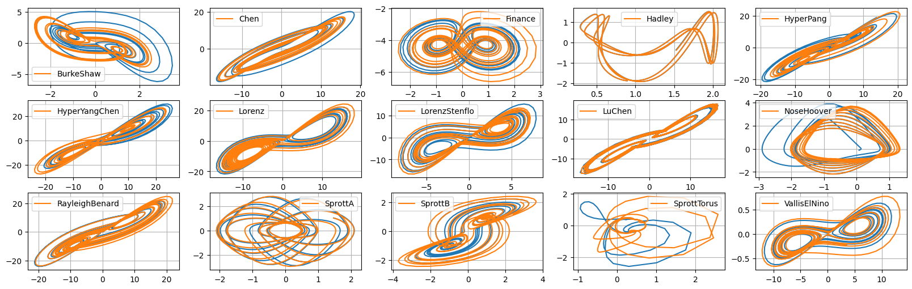
Verify explicitly that some of the systems have unstable invariant linear or constant subspaces
These systems are not globally stable!
[5]:
plt.figure()
for system in ["BurkeShaw", "NoseHoover", "SprottA", "SprottB"]:
eq = getattr(flows, system)()
eq.ic = np.array([0, 0, 0])
t_sol, sol = eq.make_trajectory(
10000,
pts_per_period=100,
resample=True,
return_times=True,
standardize=False,
)
style = "solid"
if system == "SprottB":
style = "--"
# Show z-component flying off to infinity!
plt.plot(t_sol, sol[:, 2], linestyle=style, label=system)
plt.grid(True)
plt.legend()
plt.show()
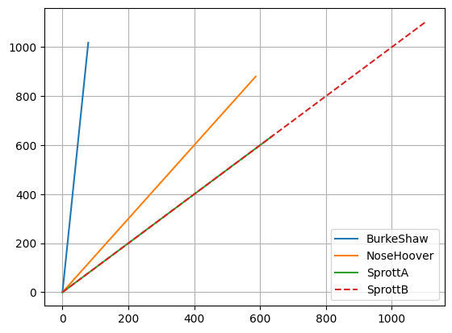
Now repeat for locally stable models!
In practice there will be finite errors in the models that leads to a breaking of the constraint. We also check again that simulated annealing gives a negative definite \(\mathbf{A}^S\) matrix with the SINDy model, not with the analytic model.
[6]:
reg_weight_lam = 0
max_iter = 5000
eta = 1.0e2
alpha_m = 0.1 * eta # default is 1e-2 * eta so this speeds up the code here
stable_systems = [2, 3, 6, 7, 14]
stable_systems_list = systems_list[stable_systems]
for i in range(len(stable_systems_list)):
plt.figure(10, figsize=(16, 3))
r = dimension_list[stable_systems[i]]
print(i, stable_systems_list[i], r)
# make training and testing data
t = all_t_train[stable_systems_list[i]][0]
x_train = all_sols_train[stable_systems_list[i]][0]
x_test = all_sols_test[stable_systems_list[i]][0]
# run trapping SINDy, locally stable variant
# where the constraints are removed and beta << 1
sindy_opt = ps.TrappingSR3(
method="local",
_n_tgts=r,
_include_bias=True,
reg_weight_lam=reg_weight_lam,
eta=eta,
alpha_m=alpha_m,
max_iter=max_iter,
gamma=-0.1,
verbose=True,
beta=1e-9,
)
model = ps.SINDy(
optimizer=sindy_opt,
feature_library=sindy_library,
)
model.fit(x_train, t=t)
# Check the model coefficients and integrate it
Xi = model.coefficients().T
Q = np.tensordot(sindy_opt.PQ_, Xi, axes=([4, 3], [0, 1]))
xdot_test = model.differentiate(x_test, t=t)
xdot_test_pred = model.predict(x_test)
x_train_pred = model.simulate(x_train[0, :], t, integrator_kws=integrator_keywords)
x_test_pred = model.simulate(x_test[0, :], t, integrator_kws=integrator_keywords)
# Check stability and try simulated annealing with the IDENTIFIED model
check_local_stability(Xi, sindy_opt, 1.0)
PL_tensor = sindy_opt.PL_
PM_tensor = sindy_opt.PM_
L = np.tensordot(PL_tensor, Xi, axes=([3, 2], [0, 1]))
Q = np.tensordot(PM_tensor, Xi, axes=([4, 3], [0, 1]))
boundvals = np.zeros((r, 2))
boundvals[:, 0] = boundmin
boundvals[:, 1] = boundmax
# run simulated annealing on the IDENTIFIED system
algo_sol = anneal_algo(
obj_function, bounds=boundvals, args=(L, Q, np.eye(r)), maxiter=500
)
opt_m = algo_sol.x
opt_energy = algo_sol.fun
print(
"Simulated annealing managed to reduce the largest eigenvalue of A^S to eig1 = ",
opt_energy,
)
# print('Optimal m = ', opt_m, '\n')
plt.subplot(1, 5, i + 1)
plt.title("Dynamical System: " + stable_systems_list[i])
plt.plot(x_test[:, 0], x_test[:, 1], label="Test trajectory")
plt.plot(x_test_pred[:, 0], x_test_pred[:, 1], label="SINDy model prediction")
plt.grid(True)
plt.xlabel(r"$x_0$")
plt.ylabel(r"$x_1$")
plt.legend()
# Plot the rho_+ and rho_- estimates for the stable systems
rhos_minus, rhos_plus = make_trap_progress_plots(r, sindy_opt)
plt.yscale("log")
plt.title(stable_systems_list[i])
plt.ylim(1, rhos_plus[-1] * 1.2)
0 Finance 3
Iter ... |y-Xw|^2 ... |Pw-A|^2/eta ... |w|_1 ... |Qijk|/a ... |Qijk+...|/b ... Total:
0 ... 8.350e-02 ... 1.036e-01 ... 0.00e+00 ... 7.27e-21 ... 1.40e-09 ... 1.87e-01
optimal m: [-0.17947889 -5.1825797 -2.00175823]
As eigvals: [-1.09368971 -0.26961701 -0.0998202 ]
0.5 * |tilde{H}_0|_F = 8.222743810419725e-10
0.5 * |tilde{H}_0|_F^2 / beta = 1.3522703154359178e-09
Estimate of trapping region size, Rm = 32.5927595697754
Local stability size, R_ls= 182092827.173459
Simulated annealing managed to reduce the largest eigenvalue of A^S to eig1 = -0.2050042510261198
1 Hadley 3
Iter ... |y-Xw|^2 ... |Pw-A|^2/eta ... |w|_1 ... |Qijk|/a ... |Qijk+...|/b ... Total:
0 ... 2.007e-02 ... 5.441e-02 ... 0.00e+00 ... 9.46e-20 ... 1.38e-10 ... 7.45e-02
optimal m: [-1.20597614 -0.06127698 -0.21472452]
As eigvals: [-2.30495414 -2.20394559 -0.09975893]
0.5 * |tilde{H}_0|_F = 2.779835894521266e-10
0.5 * |tilde{H}_0|_F^2 / beta = 1.5454975200937696e-10
Estimate of trapping region size, Rm = 21.3885906441414
Local stability size, R_ls= 538299338.770568
Simulated annealing managed to reduce the largest eigenvalue of A^S to eig1 = -0.20030897126405747
2 Lorenz 3
Iter ... |y-Xw|^2 ... |Pw-A|^2/eta ... |w|_1 ... |Qijk|/a ... |Qijk+...|/b ... Total:
0 ... 3.164e+02 ... 1.124e+00 ... 0.00e+00 ... 4.84e-21 ... 4.06e-02 ... 3.18e+02
500 ... 3.164e+02 ... 6.672e-04 ... 0.00e+00 ... 4.84e-21 ... 4.06e-02 ... 3.16e+02
1000 ... 3.164e+02 ... 1.221e-05 ... 0.00e+00 ... 4.84e-21 ... 4.06e-02 ... 3.16e+02
1500 ... 3.164e+02 ... 3.304e-07 ... 0.00e+00 ... 4.84e-21 ... 4.06e-02 ... 3.16e+02
2000 ... 3.164e+02 ... 9.497e-09 ... 0.00e+00 ... 4.84e-21 ... 4.06e-02 ... 3.16e+02
optimal m: [-1.1374041 -0.16303714 32.13197377]
As eigvals: [-10.73648216 -2.65971766 -0.09925305]
0.5 * |tilde{H}_0|_F = 4.503532455444971e-06
0.5 * |tilde{H}_0|_F^2 / beta = 0.04056360915449241
Estimate of trapping region size, Rm = 888.129989358206
Local stability size, R_ls= 32170.2699234642
Simulated annealing managed to reduce the largest eigenvalue of A^S to eig1 = -1.7636586776092522
3 LorenzStenflo 4
Iter ... |y-Xw|^2 ... |Pw-A|^2/eta ... |w|_1 ... |Qijk|/a ... |Qijk+...|/b ... Total:
0 ... 3.803e+01 ... 9.043e-01 ... 0.00e+00 ... 4.80e-21 ... 5.44e-04 ... 3.89e+01
500 ... 3.803e+01 ... 1.130e-05 ... 0.00e+00 ... 4.80e-21 ... 5.43e-04 ... 3.80e+01
optimal m: [-1.1160715 -0.04781568 25.48248769 -1.38210712]
As eigvals: [-2.80868099 -1.81204852 -0.70108156 -0.09957665]
0.5 * |tilde{H}_0|_F = 5.208971801626378e-07
0.5 * |tilde{H}_0|_F^2 / beta = 0.0005426677446027752
Estimate of trapping region size, Rm = 181.774160210473
Local stability size, R_ls= 286563.840491331
Simulated annealing managed to reduce the largest eigenvalue of A^S to eig1 = -0.7378679405609279
4 VallisElNino 3
Iter ... |y-Xw|^2 ... |Pw-A|^2/eta ... |w|_1 ... |Qijk|/a ... |Qijk+...|/b ... Total:
0 ... 2.810e+00 ... 1.150e+01 ... 0.00e+00 ... 4.90e-21 ... 8.87e-08 ... 1.43e+01
500 ... 2.813e+00 ... 4.376e-03 ... 0.00e+00 ... 4.94e-21 ... 8.34e-08 ... 2.82e+00
1000 ... 2.805e+00 ... 1.595e-04 ... 0.00e+00 ... 4.89e-21 ... 8.36e-08 ... 2.80e+00
1500 ... 2.804e+00 ... 1.990e-05 ... 0.00e+00 ... 4.89e-21 ... 8.40e-08 ... 2.80e+00
2000 ... 2.804e+00 ... 4.455e-06 ... 0.00e+00 ... 4.89e-21 ... 8.42e-08 ... 2.80e+00
2500 ... 2.804e+00 ... 1.347e-06 ... 0.00e+00 ... 4.89e-21 ... 8.44e-08 ... 2.80e+00
3000 ... 2.804e+00 ... 4.832e-07 ... 0.00e+00 ... 4.89e-21 ... 8.45e-08 ... 2.80e+00
3500 ... 2.804e+00 ... 1.919e-07 ... 0.00e+00 ... 4.89e-21 ... 8.45e-08 ... 2.80e+00
4000 ... 2.804e+00 ... 8.134e-08 ... 0.00e+00 ... 4.89e-21 ... 8.46e-08 ... 2.80e+00
4500 ... 2.804e+00 ... 3.594e-08 ... 0.00e+00 ... 4.89e-21 ... 8.46e-08 ... 2.80e+00
optimal m: [ -1.1020188 1.6500104 -96.72763406]
As eigvals: [-6.47359768 -0.69370013 -0.09821425]
0.5 * |tilde{H}_0|_F = 6.5056834646047105e-09
0.5 * |tilde{H}_0|_F^2 / beta = 8.46478346832623e-08
Estimate of trapping region size, Rm = 2449.14951253509
Local stability size, R_ls= 22642576.8995530
Simulated annealing managed to reduce the largest eigenvalue of A^S to eig1 = -1.1166003019281319
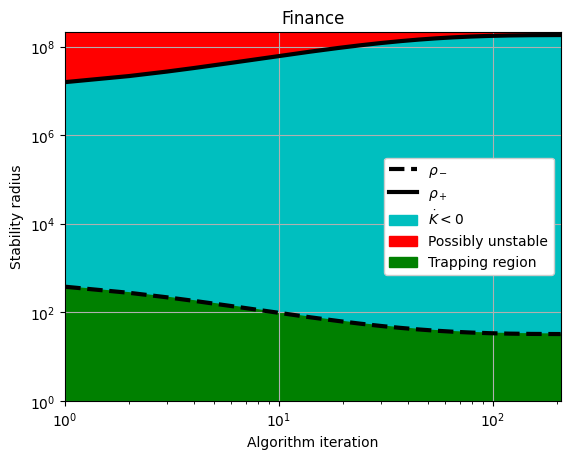
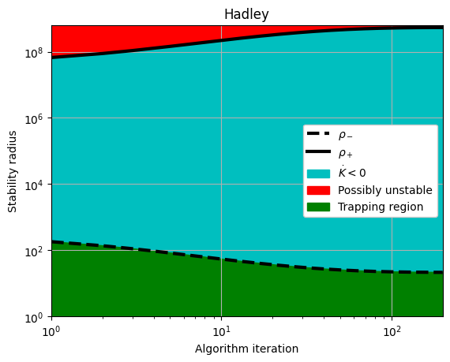
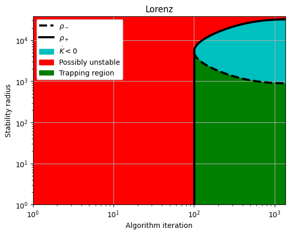
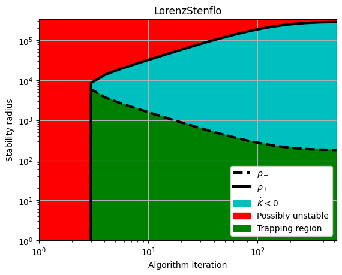
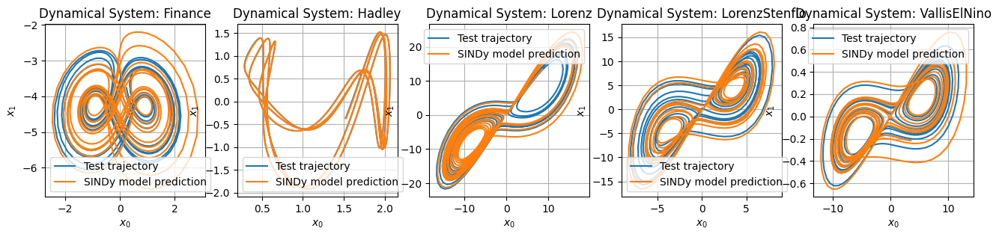
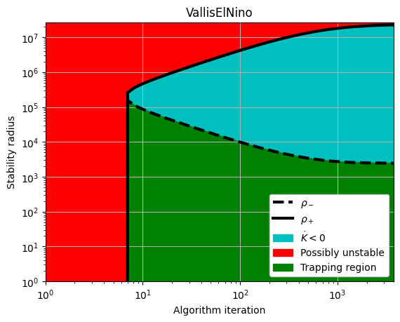
Last demonstration: building locally stable reduced-order models for the lid-cavity flow
First we compute a Galerkin model at different levels of truncation. This is also done in the Example 14 Jupyter notebook so we gloss over the description here.
[7]:
from scipy.io import loadmat
data = loadmat("../data/cavityPOD.mat")
t_dns = data['t'].flatten()
a_dns = data['a']
# Downsample the data
skip = 1
t_dns = t_dns[::skip]
a_dns = a_dns[::skip, :]
dt_dns = t_dns[1] - t_dns[0]
singular_vals = data['svs'].flatten()
class GalerkinROM():
def __init__(self, file):
model_dict = loadmat(file)
self.C = model_dict['C'][0]
self.L = model_dict['L']
self.Q = model_dict['Q']
def integrate(self, x0, t, r=None,
rtol=1e-3, atol=1e-6):
if r is None: r=len(C)
# Truncate model as indicated
C = self.C[:r]
L = self.L[:r, :r]
Q = self.Q[:r, :r, :r]
# RHS of POD-Galerkin model, for time integration
rhs = lambda t, x: C + (L @ x) + np.einsum('ijk,j,k->i', Q, x, x)
sol = solve_ivp(rhs, (t[0], t[-1]), x0[:r], t_eval=t, rtol=rtol, atol=atol)
return sol.y.T
# Simulate Galerkin system at various truncation levels
galerkin_model = GalerkinROM('../data/cavityGalerkin.mat')
dt_rom = 1e-2
t_sim = np.arange(0, 300, dt_rom)
a0 = a_dns[0, :]
# Finally, build a r=6 and r=16 Galerkin model
a_gal6 = galerkin_model.integrate(a0, t_sim, r=6, rtol=1e-8, atol=1e-8)
a_gal16 = galerkin_model.integrate(a0, t_sim, r=16, rtol=1e-8, atol=1e-8)
Now try building a locally stable trapping SINDy model now
It does not quite achieve the negative definite stability matrix, but it performs remarkably well.
[8]:
r = 6 # POD truncation
x_train = a_dns[:, :r]
t_train = t_dns.copy()
reg_weight_lam = 0.0
eta = 1.0e10
alpha_m = 1e-3 * eta # default is 1e-2 * eta so this speeds up the code here
beta = 1e-4
max_iter = 200
sindy_opt = ps.TrappingSR3(
method="local",
_n_tgts=r,
_include_bias=True,
reg_weight_lam=reg_weight_lam,
eta=eta,
alpha_m=alpha_m,
max_iter=max_iter,
gamma=-0.1,
verbose=True,
beta=beta,
)
# Fit the model
model = ps.SINDy(
optimizer=sindy_opt,
feature_library=sindy_library,
)
model.fit(x_train, t=t_train)
Xi = model.coefficients().T
check_local_stability(Xi, sindy_opt, 1.0)
# Fit a baseline model -- this is almost always an unstable model!
model_baseline = ps.SINDy(
optimizer=ps.STLSQ(reg_weight_lam=0.0),
feature_library=ps.PolynomialLibrary(),
)
model_baseline.fit(x_train, t=t_train)
Iter ... |y-Xw|^2 ... |Pw-A|^2/eta ... |w|_1 ... |Qijk|/a ... |Qijk+...|/b ... Total:
0 ... 4.685e-01 ... 1.491e-06 ... 0.00e+00 ... 2.16e-16 ... 2.12e-09 ... 4.69e-01
20 ... 4.970e-01 ... 7.515e-03 ... 0.00e+00 ... 2.57e-16 ... 5.11e-09 ... 5.04e-01
40 ... 4.743e-01 ... 2.759e-03 ... 0.00e+00 ... 2.44e-16 ... 2.93e-09 ... 4.77e-01
60 ... 4.698e-01 ... 1.782e-03 ... 0.00e+00 ... 2.40e-16 ... 2.53e-09 ... 4.72e-01
80 ... 4.883e-01 ... 1.071e-03 ... 0.00e+00 ... 2.32e-16 ... 4.74e-09 ... 4.89e-01
100 ... 4.752e-01 ... 1.064e-03 ... 0.00e+00 ... 2.33e-16 ... 3.18e-09 ... 4.76e-01
120 ... 4.664e-01 ... 9.233e-04 ... 0.00e+00 ... 2.35e-16 ... 2.29e-09 ... 4.67e-01
140 ... 4.651e-01 ... 7.966e-04 ... 0.00e+00 ... 2.34e-16 ... 2.22e-09 ... 4.66e-01
160 ... 4.653e-01 ... 6.792e-04 ... 0.00e+00 ... 2.32e-16 ... 2.25e-09 ... 4.66e-01
180 ... 4.741e-01 ... 6.146e-04 ... 0.00e+00 ... 2.29e-16 ... 3.26e-09 ... 4.75e-01
optimal m: [ 4540.90430689 -443.71967335 98.91091791 271.39224319
3318.25464249 -4761.20668214]
As eigvals: [-2.22238321e+05 -1.43353269e+05 -1.11938690e+05 -3.52084718e+04
-1.43329567e+02 4.88031121e+03]
0.5 * |tilde{H}_0|_F = 4.38893381406104e-07
0.5 * |tilde{H}_0|_F^2 / beta = 3.852548004841677e-09
Estimate of trapping region size, Rm = 0
Local stability size, R_ls= 0
[8]:
SINDy(differentiation_method=FiniteDifference(),
feature_library=PolynomialLibrary(),
feature_names=['x0', 'x1', 'x2', 'x3', 'x4', 'x5'],
optimizer=STLSQ(threshold=0.0))
[9]:
# Simulate the model
import time
t1 = time.time()
a_sindy = model.simulate(a0[:r], t_sim, integrator="solve_ivp")
t2 = time.time()
print(t2 - t1, ' seconds')
t1 = time.time()
a_sindy_baseline = model_baseline.simulate(a0[:r], t_sim, integrator="odeint")
t2 = time.time()
print(t2 - t1, ' seconds')
525.7374901771545 seconds
11.6759774684906 seconds
[10]:
rE = 16
E_sindy = np.sum(a_sindy[:, :rE] ** 2, 1)
E_sindy_baseline = np.sum(a_sindy_baseline[:, :rE] ** 2, 1)
E_dns = np.sum(a_dns[:, :rE] ** 2, 1)
E_gal6 = np.sum(a_gal6[:, :rE] ** 2, 1)
E_gal16 = np.sum(a_gal16[:, :rE] ** 2, 1)
Now we plot the trajectories and energy as function of time
Trapping SINDy model vastly outperforms the Galerkin models!
[11]:
plt.figure(figsize=(12, 7))
plt.subplot(2, 1, 1)
plt.plot(t_dns, E_dns, 'k', label='DNS', lw=3)
plt.plot(t_sim, E_gal6, label='$r=6$', lw=2, c='xkcd:dusty rose')
plt.plot(t_sim, E_gal16, label='$r=16$', lw=2, c='xkcd:brick red')
plt.plot(t_sim[:1000], E_sindy_baseline[:1000], label='Naive SINDy', lw=2, c='xkcd:grass')
plt.plot(t_sim, E_sindy, label='Trapping SINDy', lw=2, c='xkcd:ocean blue')
plt.gca().set_yscale('log')
plt.ylabel('$K$')
plt.ylim([0, 10])
plt.xlim([0, 150])
plt.grid()
plt.subplot(2, 1, 2)
plt.plot(t_dns, E_dns, 'k', label='DNS', lw=3)
plt.plot(t_sim, E_gal6, label='$r=6$', lw=2, c='xkcd:dusty rose')
plt.plot(t_sim, E_gal16, label='$r=16$', lw=2, c='xkcd:brick red')
plt.plot(t_sim[:1000], E_sindy_baseline[:1000], label='Naive SINDy', lw=2, c='xkcd:grass')
plt.plot(t_sim, E_sindy, label='Trapping SINDy', lw=2, c='xkcd:ocean blue')
plt.gca().set_yscale('log')
plt.legend(loc=1, fancybox=True, framealpha=1, fontsize=11)
plt.ylabel('$K$')
plt.ylim([1e-3, 1.3e-2])
plt.xlim([0, 60])
# plt.gca().set_yticklabels([])
plt.grid()
plt.subplots_adjust(wspace=0.2)
plt.savefig('cavity_plot.pdf')
plt.show()
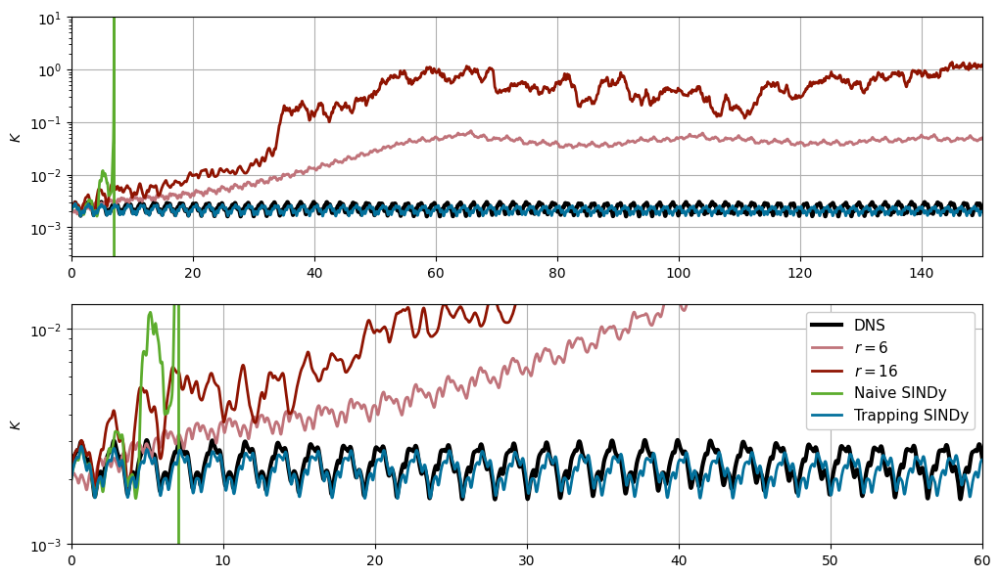
[12]:
plt.figure(figsize=(18, 5))
for i in range(r):
plt.subplot(2, r // 2, i + 1)
plt.plot(a_sindy[:, i], label='SINDy')
plt.plot(a_dns[:, i], label='DNS')
plt.plot(a_gal6[:, i], '--', label='Galerkin r=6')
plt.plot(a_gal16[:, i], '--', label='Galerkin r=16')
if i == r - 1:
plt.legend()
plt.grid()
plt.xlim(0, 4000)
plt.ylim(-0.2, 0.2)
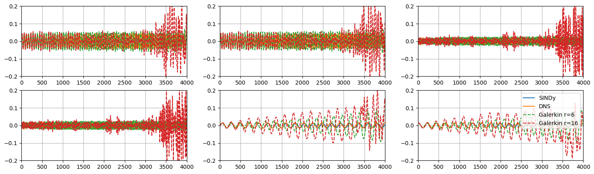
Last check: Trapping SINDy model reproduces the power spectral density of the data
[13]:
# Basic power spectral density estimate using FFT
def psd_est(E, dt=1):
Ehat = np.abs((dt * np.fft.fft(E)) ** 2)
Ehat = Ehat[:int(len(Ehat) / 2)]
N = len(Ehat)
freq = 2 * np.pi * np.arange(N) / (2 * dt * N) # Frequencies in rad/s
return Ehat, freq
psd, freq = psd_est(E_dns, dt=t_dns[1] - t_dns[0])
psd_sim, freq_sim = psd_est(E_sindy, dt=t_sim[1] - t_sim[0])
plt.figure(figsize=(12, 2.5))
plt.semilogy(freq, psd, 'k', lw=3)
plt.semilogy(freq_sim, psd_sim, 'xkcd:ocean blue', lw=3)
plt.xlim([0, 28])
plt.ylim([1e-10, 1e-2])
plt.xlabel('$\omega$', fontsize=16)
plt.ylabel('$\log(E)$', fontsize=16)
plt.grid()
plt.show()
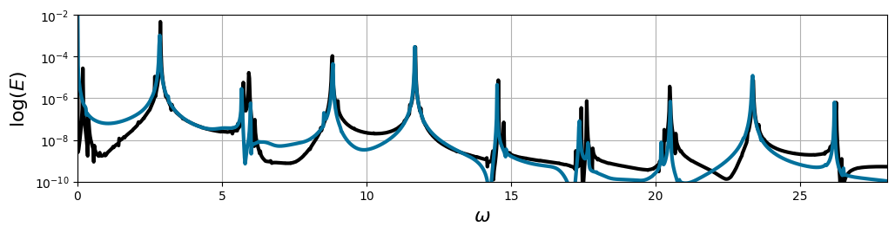